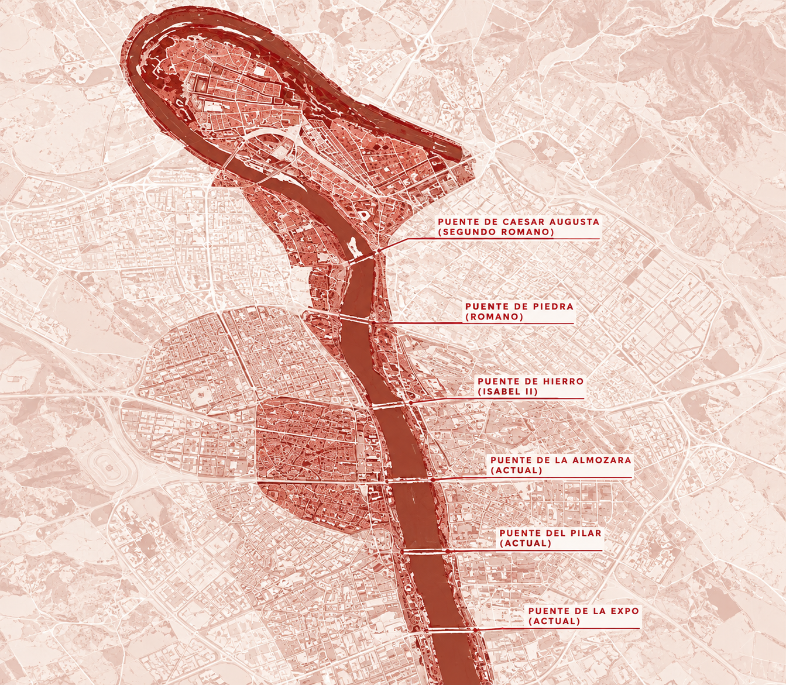
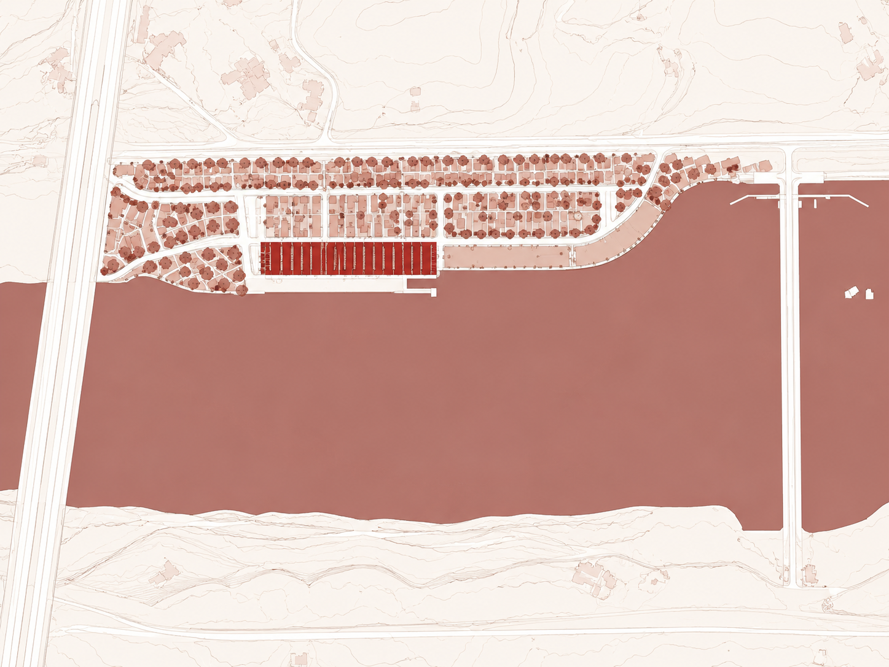
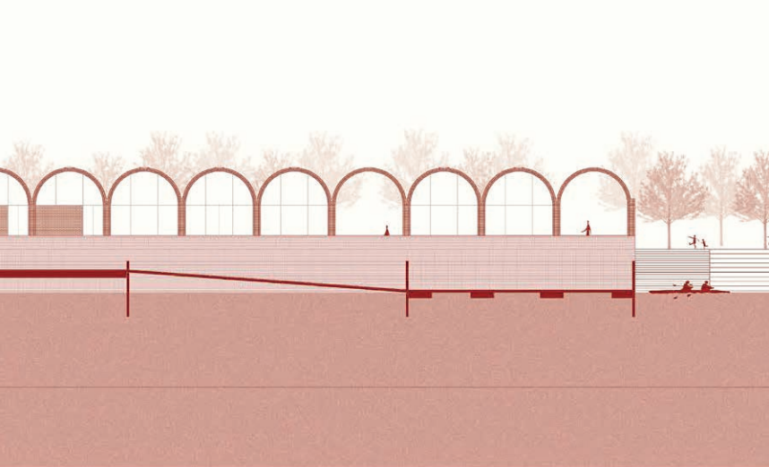
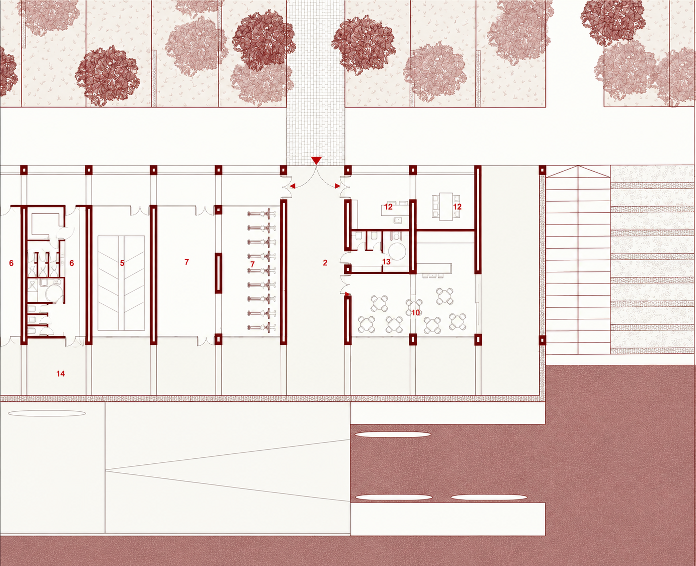
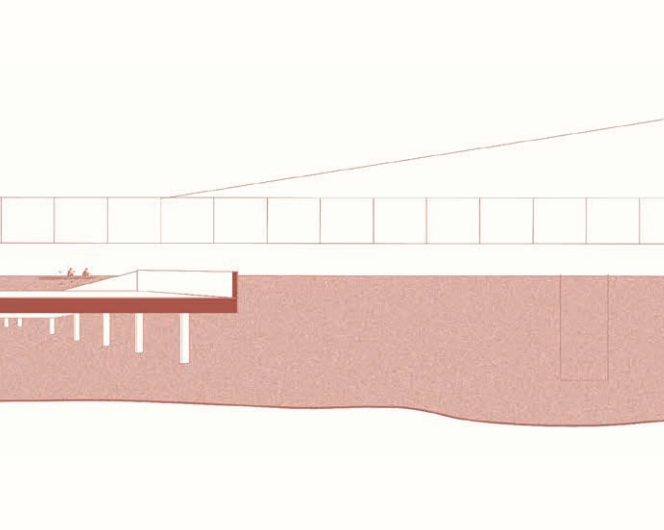
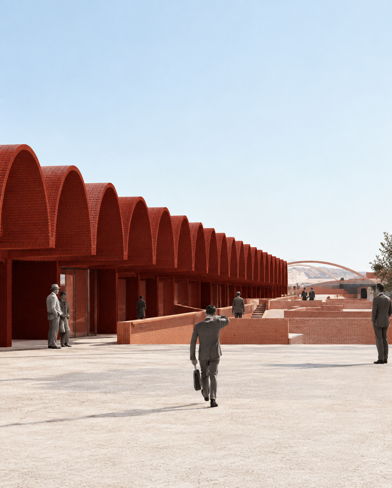
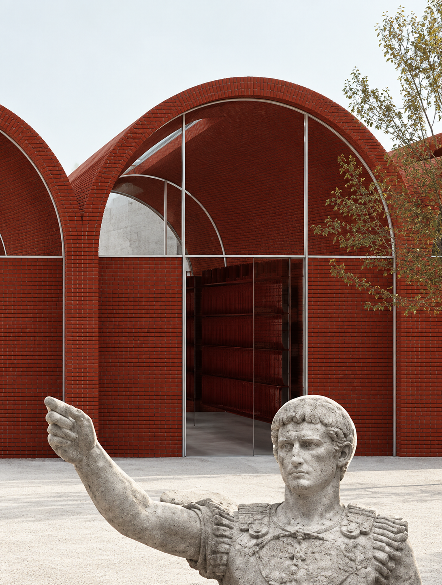
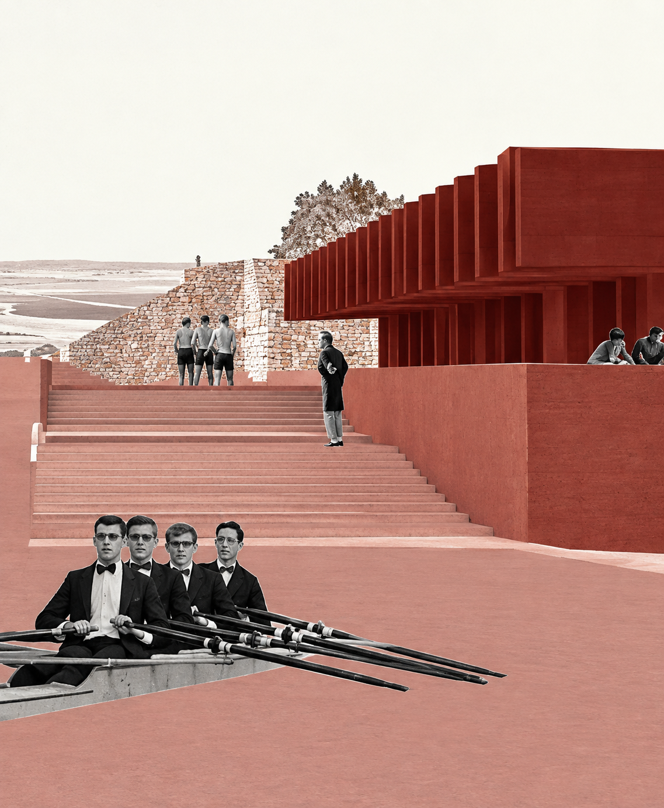
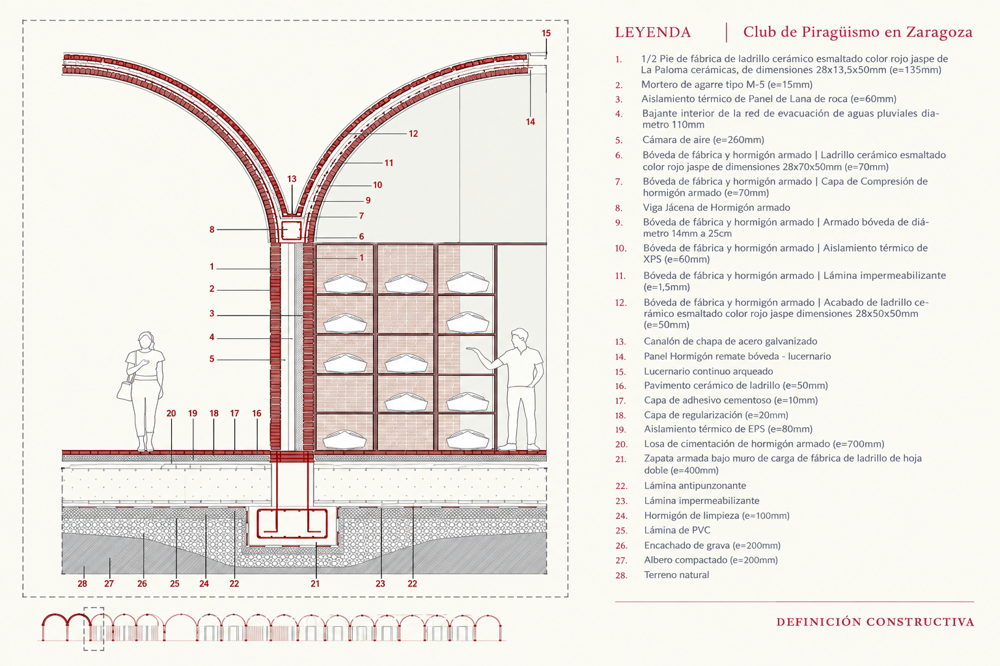

Axonometría vista río Ebro
← Proyectos · Concurso Foro Cerámico Hispalyt · ★ 1ª Mención Local Sevilla
Axonometría vista río Ebro
Ecos de Cæsar Augusta es un proyecto para un club de piragüismo que reinterpreta la arquitectura del antiguo puerto romano de Zaragoza a través de la cerámica, rescatando su esencia y adaptándola a un lenguaje contemporáneo. La propuesta pone en valor la tectónica del ladrillo, explorando sus posibilidades estructurales y expresivas mediante una serie de bóvedas de cañón contiguas que configuran el espacio del edificio, implantado estratégicamente en la ribera del Ebro.
El proyecto no se limita al edificio: actúa sobre toda la franja fluvial, ampliando el Paseo de Ladrillo incluido en el Plan de Ribera 2008 mediante un nuevo tramo con mobiliario cerámico y vegetación autóctona que sirve de transición entre la ciudad y el río.
Un graderío cerámico desciende hasta la lámina del río, resolviendo tanto el acceso de las embarcaciones como el uso público de la ribera como mirador y espacio de encuentro. A través de materiales locales y técnicas vinculadas al territorio, el proyecto fusiona tradición y modernidad, devolviendo a la ciudad su memoria fluvial e identidad histórica.
Documentación gráfica

Plano situación · Río Ebro

Planta emplazamiento

Alzado sur · vista desde el Ebro

Planta baja

Sección fugada B-B'

Collage — Patio de maniobras

Collage — Vista hangar

Collage — Embarcadero

Definición constructiva · sección bóveda cerámica